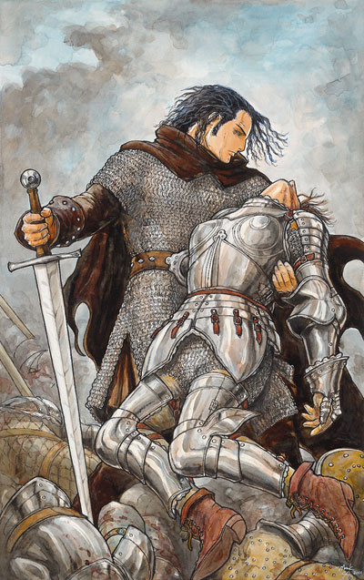
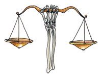

克蓝沃 Kelemvor（死亡之神）

费伦神系 强大神力
别称：死者之王 Lord of the Dead，天谴之人的审判者 Judge of the Damned
圣徽：以臂骨支撑的金色天秤

居住界域：冥界 The Fugue Plane
阵营：守序中立 LN
神职：死亡 Death，死者 the dead
信徒：将死之人，即将灭亡的家族，盗墓者，死灵猎人，殡葬者
牧师阵营：守序善良 LG，守序中立 LN，守序邪恶 LE
神域：宿命 Fate，守序 Law，保护 Protection，长眠 Repose，旅行 Travel
喜好武器：宿命之触 Fatal Touch（重剑 bastard sword）
克蓝沃是在漫长的费伦众神交替中最年轻的一位神祇，祂掌管死亡的力量，且监督着世界上所有死者的命运。虽然在人类的历史中，死亡一直占有着永恒不变庞大的一 席之地，但凡人们如何看待这股无可避免力量的态度却随着历任监督它的数字神祇而有所不同。当高深莫测的耶各（Jergal）在位时，死亡与死后的世界对凡 人来说都是巨大的谜团，许多人都对这些未知的事物感到恐惧。当米尔寇（Myrkul）自倦怠的耶各手中接下死者之王的职务后，凡人们的原始恐惧更进一步具 体化－邪恶的牧师们不断地提醒生者，死亡的力量与影响绝不仅止于墓穴之中。在那段日子里，「死亡」与「不死」之间的划分界限变的模糊不清，而凡人们也都明 瞭－投入米尔寇的怀抱并不意谓着可以免于再度被疯狂的死灵师「唤醒」。然而，当米尔寇在动荡时期中（Time of Trouble）被毁而由希瑞克（Cyric）接任时，事态甚至更加恶化－这位恶名昭彰、心胸狭窄、心智扭曲的闇日甚至连前任那种最起码的安眠保证都无法 给予凡人。当克蓝沃于众神争战（Godswar）结束过后十年上任时，祂果断地改采不同的态度与作法。
克蓝沃要求自己的牧师成为有关各种 死后事务的服务者，并教导费伦大陆上的凡人们，死亡是生命历程中自然的一部份，因此无须惧怕此一改变－只有那些生前为恶者、无信者 （Faithless）、伪信者（False）才需担忧自己死后在冥界里的命运。祂仇视所有的不死生物，将其视为可憎的存在，要求自己的牧师们尽一切力量 将之全数摧毁。祂是一位沉默寡言的神祇。虽然时至今日仍未完全确定自己的定位，但克蓝沃并不受这些不确定感困扰，祂仍秉持着强烈的正义感及仁慈直率的个 性，认真严肃地担起自己身为审判者的职责。然而，祂并不特别聪敏，且偏好诉诸直接行动，因此有时会将问题带往无法预料的方向。
克蓝沃的牧 师无时不刻都致力于照料凡人大众，为凡人揭开死亡的神秘面纱，并安慰那些痛失亲友之人。许多人都欢迎克蓝沃的牧师，感谢他们的所带来的光明抚慰与沉着气度 －有别于从前那些令人不安的米尔寇牧师近乎勒索般的收取丧葬费用。孩童们（特别是在邪恶势力邻近地区成长的）敬畏地将克兰沃的战斗牧师与圣武士视为死灵猎 人；而受死灵师与盗墓者所扰的社群也常会向死者之王的教会寻求协助。
克蓝沃的牧师在日落时祈祷以获得神术。大多数克蓝沃信仰的宗教仪式都 与祝福一位即将辞世进入冥界的灵魂有关。当有人过世时，克蓝沃的牧师会进行一个名为「辞世」（the Passing）的简单仪式，以提醒死者之王有一位新的亡魂即将进入冥界。而当出现大量死亡－比如大型战斗或遭受瘟疫肆虐的社群－时，克蓝沃的侍奉者们则 改为举行「逝者追悼」（the Lament of the Fallen），此仪式与「辞世」十分相似，但不同处在于后者还包括了重复吟咏低沉单调的圣歌、以及规律地将尘土洒到空地之上。此外，教会之内也有一个名 为「捐献」（Daeum）的非公开仪式，克蓝沃的牧师会将死后无人继承的财产纳入教会中，以资助教会的活动，而后宣扬死者之王那抚慰人心的教导。克蓝沃认 为「盾集庆典」（Shieldment）与「月宴节」（the Feast of the Moon）都是具有特别意义的圣日，在这两天内牧师们会讲述已逝世者的种种行谊，使其不被生者所遗忘。在很罕见的情形下，强大的克蓝沃牧师会在圣日当天施 展「完全复生术」（true resurrection），将逝世已久的英雄带回人间－因为现在又再度需要他们的力量。克蓝沃的牧师有时会兼职成为死灵师、游侠、或是长眠引者 （Doomguide），运用自己的知识去搜猎、摧毁不死生物。克蓝沃的牧师绝对不会引导负能量去责退或命令不死生物。
历史/与众神的关系 History/Relationship：
如 果不是发生了「动荡时期」，那么名为克蓝沃˙莱恩斯班（Kelemvor Lyonsbane）的凡人战士或许只会在某个战场上毫无价值、无人悼念地孤单死去。他自出生起就受家族中的远古诅咒所苦－每当他做出任何善良无私的行动 时，就会暂时被诅咒转变为一只嗜血好杀的猎豹。然而，他在因缘际会之下加入了一个冒险团队－成员包括了来自散提尔堡（Zhentil Keep）的盗贼希瑞克、及化名为「午夜」（Midnight）的年轻秘术施法者。在众神争战结束之后，这三位凡人最后都被擢升成为神祇－这是一连串狡猾 的阴谋、背叛、以及罕见的巧合交织而成的结果。
升为神祇之后，这三位从前的同伴之间仍维持着所谓的「联系」。谎言王子对克蓝沃与午夜（现 在她继承了蜜丝特拉的名号与职责）心怀怨恨，将自己所遭遇的一连串挫折都怪到祂们身上。希瑞克不停地筹划着要再度夺回死亡的管辖权－祂曾一度拥有的神职－ 并驱策自己的信徒们去触犯克蓝沃的忌讳，比如干扰死者的安息、破坏尸体使之难以辨认、并支持一切与死灵术有关的活动。还未成为神祇之前，克蓝沃与蜜丝特拉 原本是一对恋人，但经历这十四年来的漫长风雨之后，祂们之间的关系似乎也随之变的不确定。蜜丝特拉努力地在一切事务上帮助克蓝沃，但她自己沉重的职责使得 祂们无法常常碰面。克蓝沃痛恨支持死灵术的维沙伦（Velsharoon）、以及散播剧毒与疾病的塔洛娜（Talona）－因为正是这些可憎的事物将许多 寿命未届即死去的亡魂送进冥界。克蓝沃目前大部分时间都与耶各一起待在冥界的水晶塔中，向后者学习有关死者之王此一职位的责任与需求。虽然被遗忘者（耶各 的别称）那冷硬的实际观点与毫无怜悯的冷血使克蓝沃感到困扰，但祂仍非常尊敬耶各－就算说祂相信这位远古神祇也不为过。
教义 Dogma：
记 住，死亡也是生命周期的一环，它并不是结束，而是另一个开始；它并不是惩罚，而是生命中不可或缺的必然需求。死亡是一个有序的进程，毫无虚假、遮掩、随 兴。帮助那些将死之人，让他们有尊严的死去。反对那些提倡以人工方法非自然地使自己的寿命超出自然限制的观点－比如成为不死生命。要尊重已逝者，因为正是 他们的努力不懈才使费伦大陆得有今日的繁荣－假如忘却他们，就是忘却我们自己身在何处（以及为何身在此处）。所有的费伦人将死之际，都应有一位克蓝沃牧师 待在他身旁，陪伴对方走完最后一程。
牧师与神殿 Clergy & Temples：
克蓝沃的牧师们负责主持葬 礼、处理各种与死亡有关的事务，也常应各地区统治者的请求前去监督遗嘱的执行过程与结果。他们向社会大众讲述死后的平静过程，并确保死者的遗体能依教会的 传统安全下葬。他们会对瘟疫肆虐的邻近地区发出警讯，并尽力救治他们碰上的所有病患。侍奉克蓝沃的牧师将所有的不死生物都视为可憎的存在，尽一切可能设法 让这些怪物重回「永远安息」。此外，他们也致力于彻底扑灭那些创造不死生物的人（这是克蓝沃与耶各牧师最大的不同点－后者仍会留下一些不死生物供自己使 用）。死者之王的牧师们有时会发动圣战去攻击不死生物或被认为已经制造太多死亡的恶者。在上述的情形中，教会偶尔也会雇用冒险者，以帮助对抗那些他们自己 无法独力处理的目标。
克蓝沃教会内的成员通常都沉默寡言（到了甚至是阴沉的地步）。许多成员都是在不死生物侵袭中痛失挚爱、甚或是自身曾 深切地体验过死亡（而又被带回尘世）之后，不久便加入信奉死者之王的行列。许多较资深的成员原本都信奉米尔寇－即使在骸骨之王（Lord of Bones，米尔寇的别称）已殒落十四年之后的今日，有些较资深的成员仍无法彻底适应这两位神祇教义上的巨大差异。
由于许多克蓝沃的神殿原先都是信奉米尔寇的神殿，因此通常都有着不为牧师所喜的丑恶或刺眼造型－充斥着各种骨骸及骷髅造型风格的装饰。有些较大型的神殿甚至还存有一些从前用来进行黑暗或复活仪式的房间（当然目前都已被弃置密封）。
克蓝沃的化身 Kelemvor's Avatar：
由 克蓝沃所使用的化身形象，可看出祂仍对自己原来的凡人形体有所依恋。这些因旅途而饱受风霜的化身们静默地再物质界中四处漫游，时常风尘仆仆地出现在新近发 生大量死亡的地点中，以确保所有的亡魂都会如常进入死后的世界。这三年以来，克蓝沃已对在费伦大陆上现身愈来愈不感兴趣。相较之下，祂目前较常派遣化身执 行援救任务－拯救那些被不公正地定罪而在下层异界（the Lower Plane）中受苦的灵魂。
--
附注：长眠领域 Repose
「长 眠」领域与《玩家手册》中所列出的「死亡」领域十分类似，但是由那些禁止自己牧师施展邪恶法术的善良阵营神祇所提供的领域。在《被遗忘的国度战役设定集》 中，克蓝沃、耶各、欧西里斯（Osiris，穆罕瑞德神系的死亡之神）、乌楼加蓝（Urogalan，半身人神系的死亡之神）拥有给予长眠领域的力量－而 不是死亡领域。
神赋力量：
你每天可以使用一次「死亡碰触」的能力，此为法术型能力。你必须通过近战碰触攻击命中一个活物（使用碰触型法术的规则），当命中时会造成每牧师等级1d6的伤害。如果该伤害值大过该活物目前的生命值，目标就会立刻死亡。
长眠领域法术列表－
1 观命术 Deathwatch
2 遗体防腐 Gentle Repose
3 死者交谈 Speak with Dead
4 防死结界 Death Ward
5 杀生术 Slay Living
6 归尘术 Undeath to Death（详见《费伦魔法志》）
7 灰飞湮灭 Destruction
8 护命术 Surelife
9 女妖之嚎 Wail of Banshee
护命术 Surelife
防护系
等级：长眠8
法术成分：言语、姿势、材料
施展时间：1轮
距离：个人
目标：自身
持续时间：1分钟/每2等级
此 法术可保护你免受某些伤害，得以不会在那些原本会造成死亡－比如被浸入沸油中或者被崩塌掩埋－的情况中就此死去。此法术只能让你免于自然事故与情况的伤 害，无法抵挡其它法术或是其它生物的行动（比如龙的喷吐或其它人的刀剑）。你必须明确指定此法术所要抵挡的情况－该法术也只能保护你免受该种情况的伤害。 当你在法术持续时间内碰上该种特殊情况时，该法术便会保护你，使你不会受到任何伤害（也不会感到所有不适）。然而，此法术无法保护你所携带的物品。当法术 终止时，如果你仍处于该种情况，则会开始正常受到伤害。
法术材料成分：一份由蜜桃甜浆与辰砂所混合制成的软膏。
--
资料来源：费伦大陆信仰与神系《Faiths & Pantheons》
译者：一凡